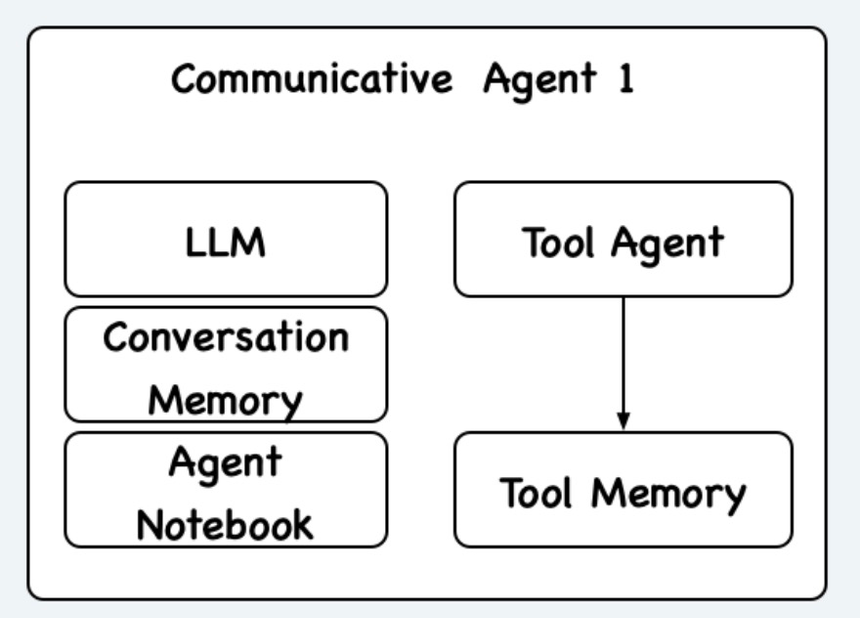

框架理念#
🚀 为什么会设计这个框架#
现在开源平台上有各种agent，例如AutoGPT、Open Interpreter等，他们各有所长。由于他们的开发者并不相同，所以大多数时候这些agent也只能各自为战，用户也难以将不同agent聚合到一起，通过他们取长补短来完成自己的复杂任务。参考现代人类合作范式，大家通过即时通讯软件进行消息互通和工作协调，我们认为如果要令不同的异构agent能够协作解决任务，需要有一个类似的统一架构，来使得这些agent得以相互沟通。基于此，我们提出了IoA，一个为Agent设计的即时通信软件。
Client#
目前大部分的agent在设计之初并不考虑multi-agent合作的情况，我们将现有的agent称为Tool Agent，因为他们更像是作为一个智能的tool完成某一个给定的任务。为了使这些不同的Tool Agent可以进行沟通，我们定义了一个Communication Layer将Tool Agent包裹起来，并将这整个看作一个Communicative Agent im_client/communication/communication_layer.py，结构大体如下:
{kind=link}
Communication Layer 中，包含几个重要的组件:
LLM : 用于跟外界（其他agent等）进行沟通，同时也会给自己的Tool Agent分配任务（这个LLM可以和Tool Agent的LLM不一样，比如我们可以用基于GPT-3.5的OpenAI Assistant作为Tool Agent，但用GPT-4作为Communication Layer的LLM）
Conversation Memory : 存储了Communicative Agent与其他Agent的沟通记录，包括任务的目标、聊天过程、结果等。因为我们希望Agent不是一个启动一次就结束的程序，而是一个可以持续的实体，所以Conversation Memory应该是一个数据库(截止至2024.2.3写文档时还未完全支持)，存储了历史所有任务的所有聊天记录。
Agent Contact : 存储了之前所有与该agent合作过的agent信息，以及从之前合作过程中得出的对其他agent的评价，方便以后该agent找队友时进行参考。
Tool Agent : 就是不同的agent，可以是OpenAI Assistant、ReAct agent、Open Interpreter等第三方agent，他们只负责去完成Communication Layer里的LLM给他们分配的任务，不会参与到实际的与其他agent交互的过程中。
Server#
要使不同的Communicative Agent可以协同完成任务，需要一个中心服务器，这个服务器的功能包括:
Agent Registry : 记录了所有接入IoA的agent的信息，包括agent的描述，agent的能力等。所有agent在启动的时候都应该以规定方式向这个服务器注册自己。同时支持根据agent的特征进行查找并返回合适的agent。
Session Manager : 记录了所有正在进行的任务的信息，包括任务的目标、任务的参与者、任务的状态等。有点像是微信里的一个群聊，只不过这个群聊是由不同的agent组成的。接收到一个agent发送了消息到某个群里的话，就会自动把消息转发给这个群里其他agent。